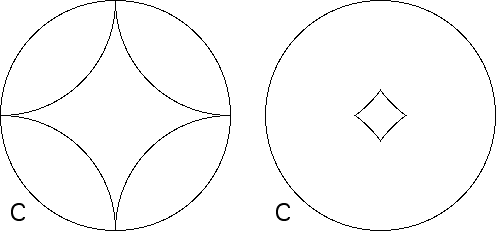
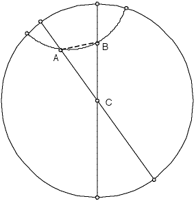

Sums of interior angles of polygons
| In the Poincare disc angle measure exhibits some properties counterintuitive to us, having grown up with Euclidean geometry. |
| For example, the geodesics shown here produce two hyperbolic rhombi. |
| On the left, adjacent geodesics intersect on the circle C bounding the Poincare disc and so share common tangent lines where they intersect. This makes all the angles have measure zero and the sum of the angle measure of this rhombus is zero. |
| On the right, the sides of the rhombus are almost straight Euclidean lines, intersecting at (a bit less than) 90. |
|  |
| This illustrates a peculiar feature of the Poincare disc: we can construct a
regular |
| 0 < s < n*180 - 360 |
| Recall the right side of the inequality is the angle sum of a regular
Euclidean |
| Now consider the general situation with the angle sum for a hyperbolic triangle. |
|  |
| Here two diameters of the Poincare disc form two sides of the triangle ABC. |
| The angle at C has the same measure in both the hyperbolic and Euclidean triangles, but the angles at A and B have a smaller measure in the hyperbolic triangle than in the Euclidean triangle ABC. |
| With a bit more work we can see that all hyperbolic triangles have angle sum < 180. |
Return to hyperbolic geometry.